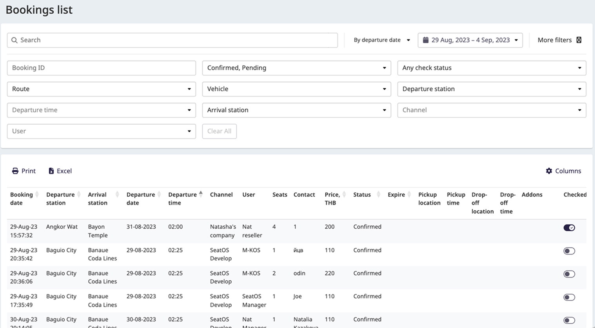
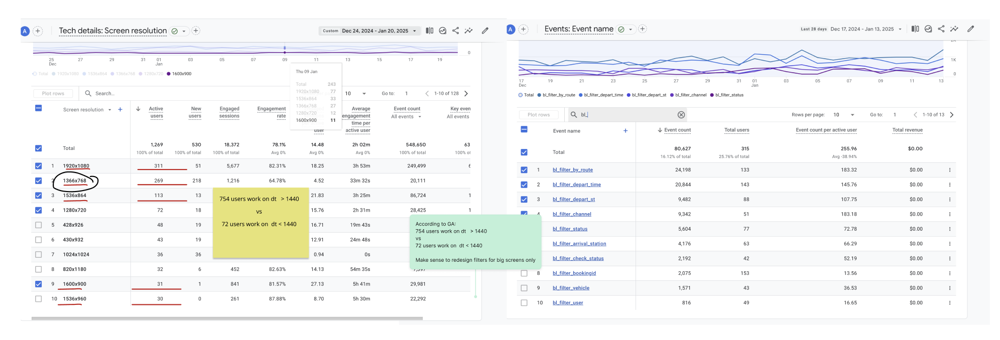
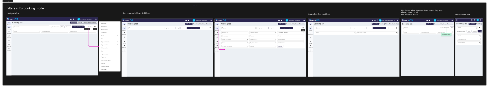

Список бронирований — редизайн фильтров
Таблица бронирований несёт 20+ столбцов и почти столько же фильтров. Я использовала продуктовую аналитику, чтобы понять, какими фильтрами люди действительно пользуются, а затем дала каждому пользователю способ держать свои самые используемые фильтры в одном клике — не перегружая тех, кому нужно лишь найти бронирование.
Фильтры съедали экран
В таблице бронирований больше 20 столбцов и почти столько же фильтров. В исходной вёрстке фильтры занимали почти половину экрана и создавали много визуального шума. Мы решили свернуть их в раскрывающуюся панель — и, прежде чем решать, что оставить на виду, выяснить, какими фильтрами люди действительно пользуются.

Пусть данные укажут путь
Я не могла поговорить с пользователями напрямую — а в B2B слишком много сценариев, чтобы спроектировать что-то, что подходит всем сразу. Поэтому я разметила фильтры событиями через Google Tag Manager и собирала использование в течение месяца, чтобы увидеть, какие из них выходят в топ. Когда данных набралось достаточно, я посмотрела несколько десятков сессий Hotjar, чтобы понять контекст за цифрами.

Один поиск, пять любимцев, много ролей
Самым используемым действием был поиск конкретного бронирования. Помимо него выделились пять фильтров как самые часто используемые. Загвоздка: этими пятью пользовались не одни и те же люди — разные роли полагались на разные, а многим менеджерам не нужно было ничего, кроме поиска бронирования.
Так что единый фиксированный набор «дефолтных» фильтров был бы неправильным почти для всех. Правильный дефолт был разным для каждой роли — и часто для каждого человека.
И всё же некоторые фильтры были явными любимцами для многих пользователей:
Закрепление фильтров — персональное по замыслу
Вместо того чтобы угадывать универсальный набор, мы дали каждому пользователю закреплять три фильтра, которыми он лично пользуется чаще всего. Закреплённые фильтры остаются на панели; всё остальное живёт в одном клике в раскрывающейся панели. Тот, кто только ищет бронирования, получает чистую панель; продвинутый пользователь держит свои ключевые фильтры под рукой.
Чтобы привлечь внимание пользователей к изменению, мы выпустили три самых популярных фильтра как валидные преднастроенные закрепления. Сам редизайн был разбит на три подзадачи — этот пример охватывает только работу над функциональностью закрепления фильтров.

Попробуйте закрепить фильтры
Откройте панель фильтров, закрепите до трёх и посмотрите, как они появляются на панели. Названия фильтров размыты — суть в самом паттерне.